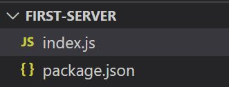
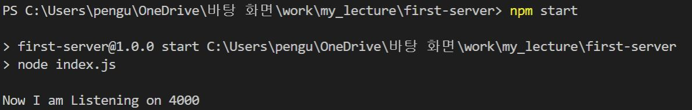

NPM에는 서버 제작 시 불편함을 해소하고, 편의 기능을 추가한 웹 서버 프레임워크가 있다. 그 중 대표적인 것이 Express이다. Express 패키지를 설치하고, 실행 가능한 자바스크립트 파일을 만들어, 거기에 Express가 반영된 코드를 작성하고 그것을 node로 실행시키는 순서로 작업을 진행하면 된다.
먼저 프로젝트 폴더를 하나 생성하고, main 파일로 index.js 를 생성한다. 그리고 해당 프로젝트 폴더에 대하여 npm init을 진행한다.
다음으로 프로젝트 폴더에 Express 패키지를 설치한다. npm install express 명령을 실행하면 된다.
1 2 3 4 5 6 7 8 9 10 11 12 13 14 15 | { "name": "first-server", "version": "1.0.0", "description": "", "main": "index.js", "scripts": { "test": "echo \"Error: no test specified\" && exit 1" }, "author": "yoonho", "license": "ISC", "dependencies": { "express": "^4.17.1" } } |
설치가 완료되었다면, 다음으로 index.js를 아래와 같이 작성한다.
1 2 3 4 5 6 | const express = require('express'); const app = express(); handleListening = () => console.log("Now I am Listening on 4000") app.listen(4000, handleListening); |
이제 4000번 포트를 서버로 사용할 준비가 되었다. 그 전에 package.json에서 실행 명령어를 지정해보겠다. 아래와 같이 내용을 수정하면 된다.
1 2 3 4 5 6 7 8 9 10 11 12 13 14 15 | { "name": "first-server", "version": "1.0.0", "description": "", "main": "index.js", "scripts": { "start": "node index.js" }, "author": "yoonho", "license": "ISC", "dependencies": { "express": "^4.17.1" } } |
이제 npm start 명령을 사용해 서버를 실행시키는 것이 가능한 상태가 되었다. 아래와 같이 명령어를 실행시켜 서버의 동작을 보자.
